その他の製品
�@スタイラスタイマー
カルモニックス
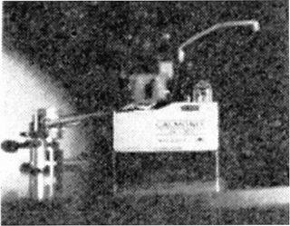 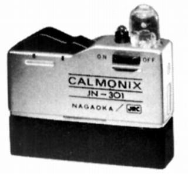
■価格 2,500円
■備考 価格は1973年のもの
アームの下に設置。
所定時間経過で自動的にランプが点灯する仕組みらしい。
CR-1000
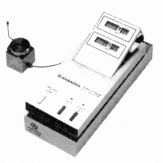
■価格 25,000円
■備考 デジタルスタイラスタイマー
�A水平器
プレイヤーレベル
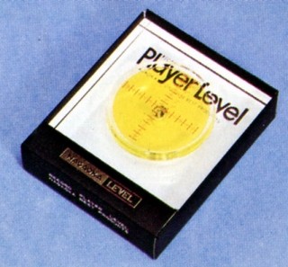
■価格 1,000円
■備考 価格は1973年のもの
プレイヤーのセンタースピンドルに
装着して使用。
PL-601
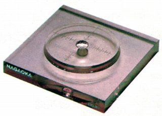
■価格 1,200円
■備考 詳細不明、上記の「プレイヤーレベル」と同タイプか？
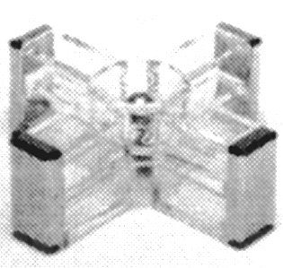
■価格 1,500円
■備考 価格は1985年のもの
2個のベアリングを使用したドライタイプ
�Bストロボマット
ストロボマット
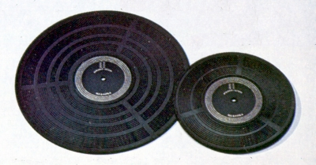
■備考 価格は1973年のもの
1975年頃は （大）900円 （小）700円
ゴムをハロゲン処理しホコリをつきにくくした
ストロボスコープ付きマッド。
（小）は直径200�o、（大）は直径296�o。
1980年代には（小）はTS-620、（大）はTS-621の型番がつけられた。 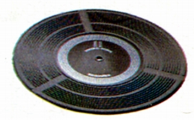 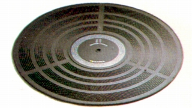
（左がTS-620、右がTS-621)
ストロボスコープ
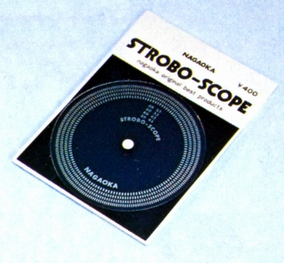 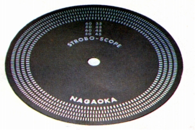
■価格 400円
■備考 価格は1975年のもの
1980年代にはTS-622の型番がつけられた。
�Cスタイラスミラー
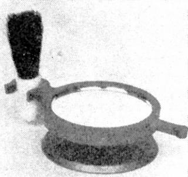
■価格 300円
■備考 価格は1973年のもの
�D針圧計
SPG-1
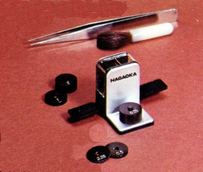
■価格 1,500円
■備考 価格は1975年のもの
天秤型。
測定範囲0.25〜6.0g
スタイラスプレッシャーゲージ
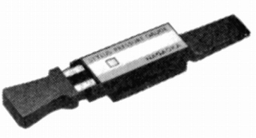
■価格 1,500円
■備考 価格は1981年のもの
シーソー型。
測定範囲0.5〜6.0g。最小単位0.1g
�Dその他
ドライバーセット
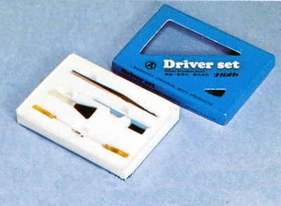
■価格 600円
■備考 価格は1975年のもの
プレイヤー用のドライバーセット。